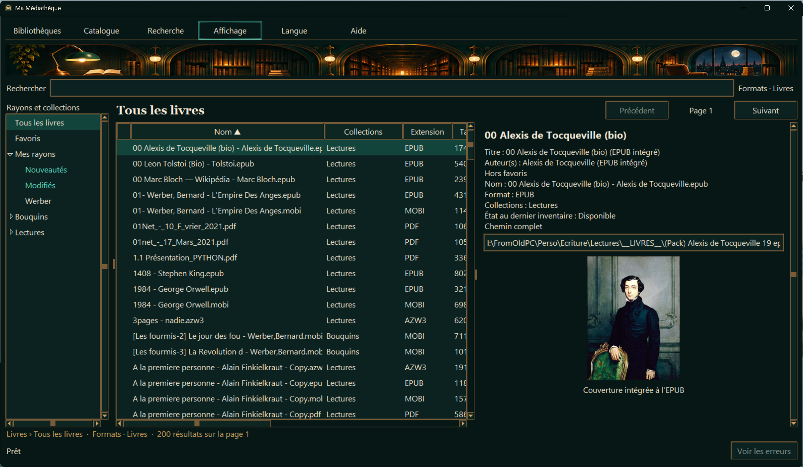
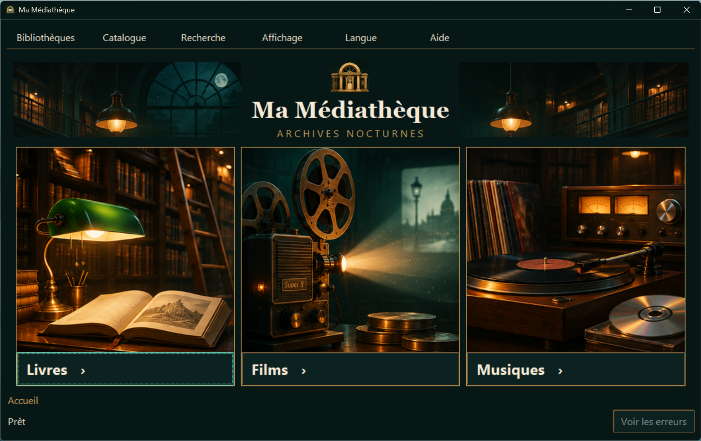
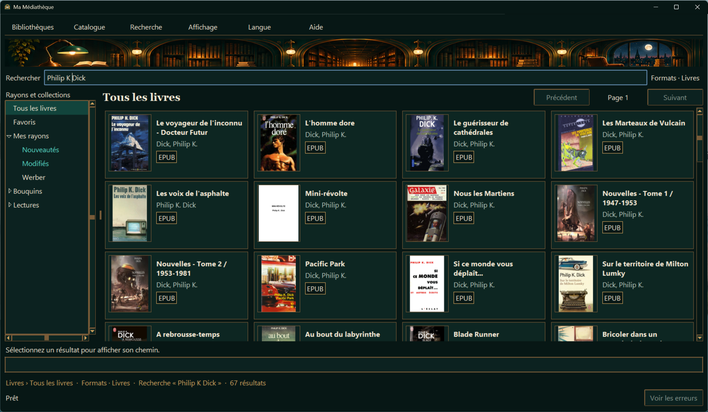
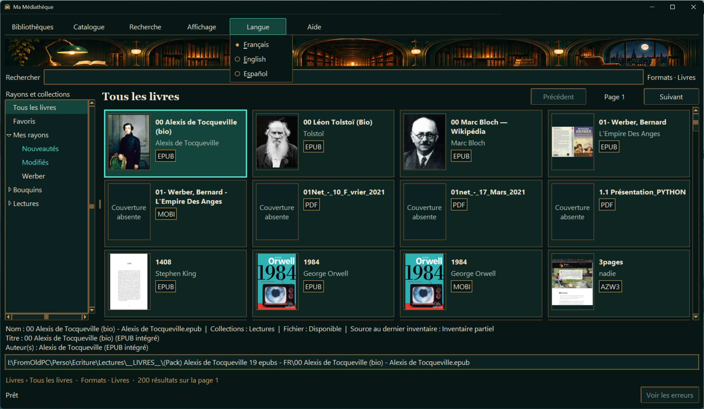

01 / Vue Liste
Consulte les détails
Trie tes fichiers dans le tableau et retrouve les informations et la couverture dans le volet de détails.
Catalogue personnel
Tes livres, films et musiques au même endroit, même quand les fichiers sont répartis sur plusieurs disques.
Alpha 0.1.20 · Windows 11 x64 · 18,9 Mo

En pratique
Ajoute les dossiers à cataloguer, organise tes collections avec des tags et marque tes favoris. Tu peux consulter le catalogue même quand un disque est débranché.

01 / Vue Liste
Trie tes fichiers dans le tableau et retrouve les informations et la couverture dans le volet de détails.

02 / Recherche
Lance une recherche dans tes collections. En mosaïque, les couvertures t’aident à repérer le bon résultat.

03 / Affichage et langue
Passe de la liste à la mosaïque et choisis le français, l’anglais ou l’espagnol sans redémarrer.